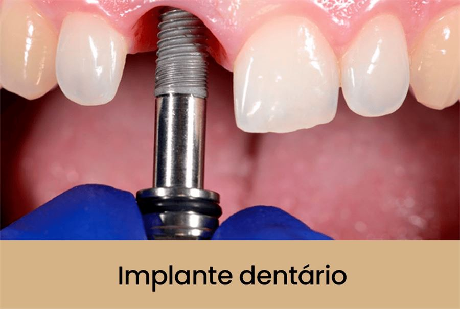

Implante Dentário
Solução segura e eficaz para substituir dentes perdidos: uma raiz artificial fixada ao osso, com resultado estável e natural. Planejamento individual e tecnologia de diagnóstico avançada em cada etapa.
O procedimento é realizado com anestesia, o que torna a cirurgia confortável. No pós-operatório, o desconforto costuma ser leve e controlado com medicação.
É uma solução de longa duração e, quando bem planejado e cuidado, pode durar muitos anos — depende de higiene adequada e acompanhamento profissional.